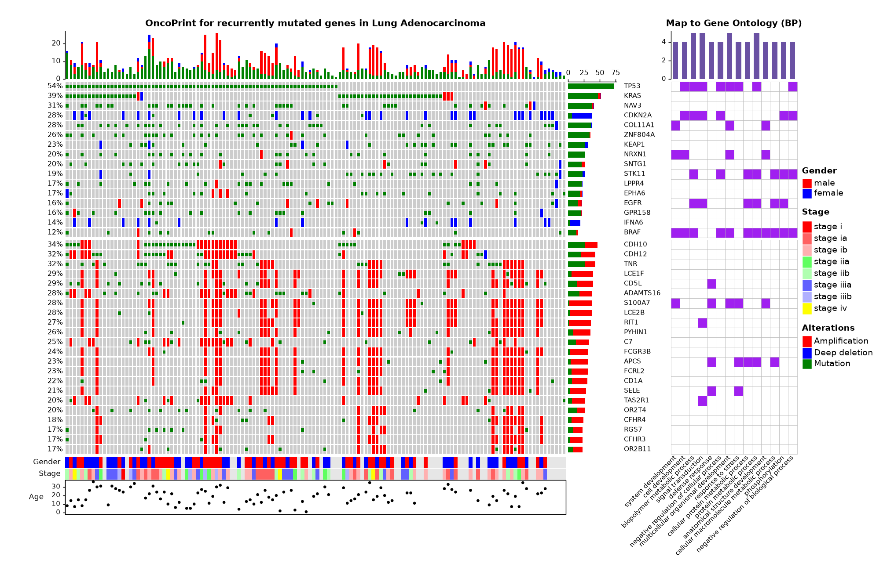
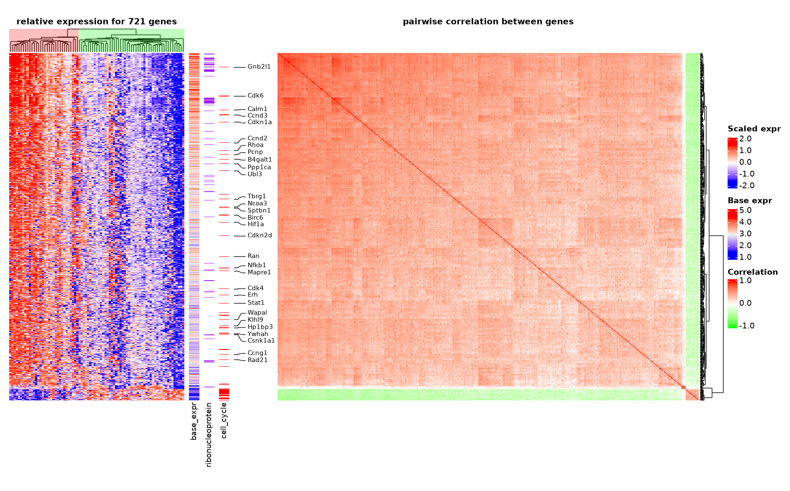
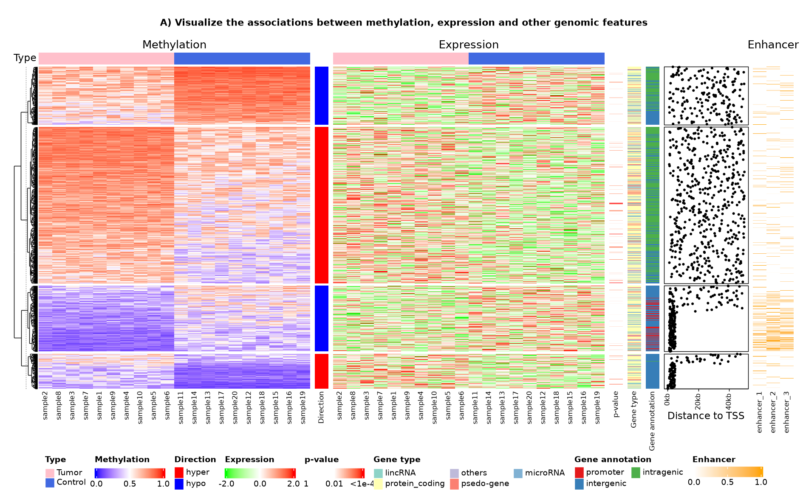
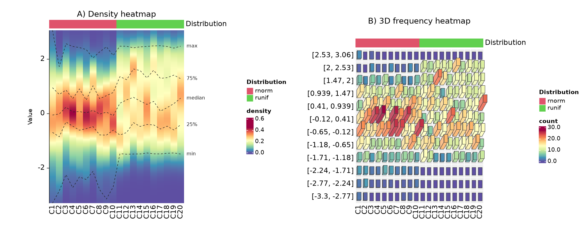
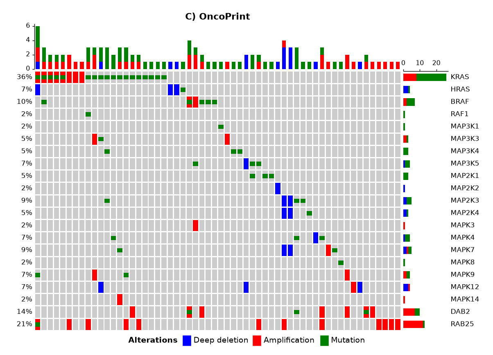
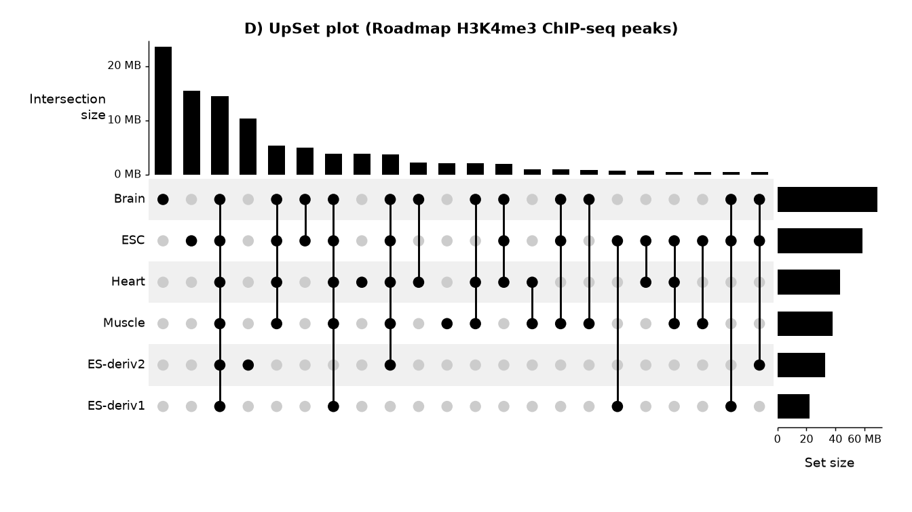
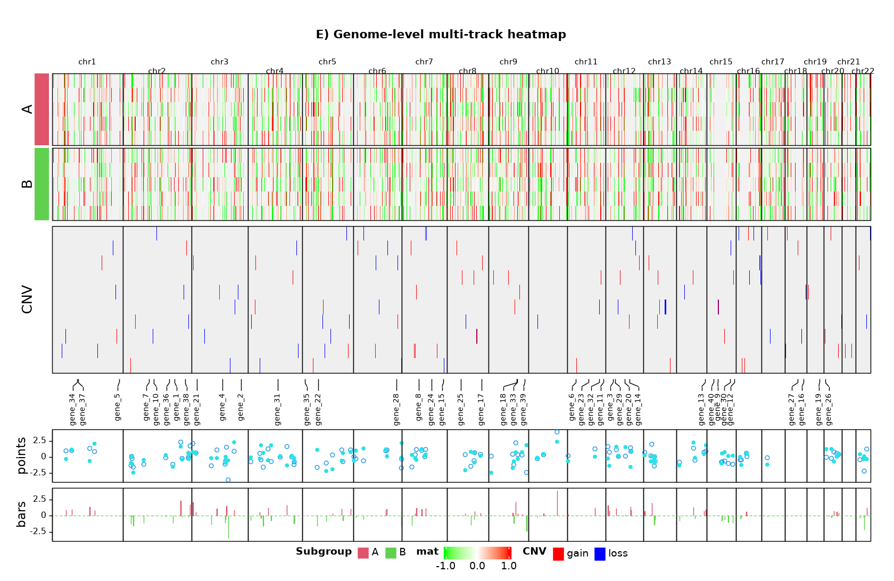
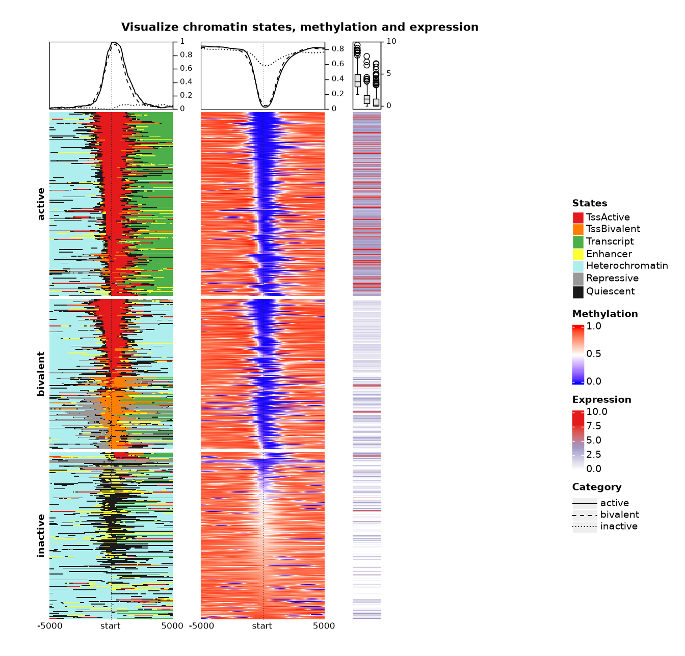

16 Publication Examples#
This chapter reproduces the example figures from both foundational
ComplexHeatmap publications using ComplexHeatmap-py
(https://github.com/zhanxw/ComplexHeatmap-py):
- Gu, Z., Eils, R., & Schlesner, M. (2016) — “Complex heatmaps reveal patterns and correlations in multidimensional genomic data.” Bioinformatics, 32(18), 2847–2849. DOI: 10.1093/bioinformatics/btw313.
- Gu, Z. (2022) — “Complex heatmap visualization.” iMeta, 1(3), e43. DOI: 10.1002/imt2.43.
All datasets required to reproduce these figures offline are bundled
inside ComplexHeatmap-py
(ch.load_dataset(...)) or shipped in this book repository’s
data/
directory, and the full executable script is available in scripts/ch16_publication_examples.py.
16.1 Summary of Reproduced Publication Figures#
| Publication | Paper Figure | Topic & Key Components | Book Figure |
|---|---|---|---|
| Bioinformatics (2016) | Figure 1A | TCGA Lung Adenocarcinoma enhanced oncoPrint (38 genes x
134 patients, AMP-rate split, clinical tracks) + GO Biological Process
Heatmap |
Section 16.2.1 |
| Bioinformatics (2016) | Figure 1B | Mouse T-cell scRNA-seq heterogeneity across all 721 signature genes
+ base_expr + ribonucleoprotein +
cell_cycle + anno_mark + pairwise gene
correlation (cor) |
Section 16.2.2 |
| Bioinformatics (2016) | Suppl. S3 & S4 | DMR methylation/expression/enhancer correspondence
(meth) and GBM 450K CGI-split methylation |
Section 16.2.3 & Chapter 14 |
| iMeta (2022) | Figure 1 (A–C) | Modular object-oriented design (Heatmap,
HeatmapAnnotation, HeatmapList) |
Section 16.3.1 |
| iMeta (2022) | Figure 2 (A–D) | Rendered dendrograms (color_branches + nodes),
layer_fun overlays, and TCGA GBM unsplit vs pre-split
class comparison |
Section 16.3.2 |
| iMeta (2022) | Figure 3 (A–D) | 13-track annotation gallery (anno_simple ..
anno_horizon), anno_mark,
anno_link boxplots, and anno_textbox word
clouds |
Section 16.3.3 |
| iMeta (2022) | Figure 4 (A–B) | Multi-omics DNA methylation/expression/enhancer
HeatmapList + global epigenomic DMR summary dashboard |
Section 16.3.4 |
| iMeta (2022) | Figure 5 (A–E) | High-level plots: densityHeatmap, 3D
frequencyHeatmap, TCGA oncoPrint, Roadmap
H3K4me3 genomic UpSet, and chr1..chr22
vertical genome-level heatmap |
Section 16.3.5 |
| iMeta (2022) | Figure 6 | Chromatin states, DNA methylation (-5kb..+5kb TSS
profiles), and Roadmap E003 expression (analog of R
EnrichedHeatmap in ComplexHeatmap-py) |
Section 16.3.6 |
16.2 Bioinformatics (2016): Multidimensional Genomic Data#
Gu, Z., Eils, R., & Schlesner, M. (2016). Complex heatmaps reveal patterns and correlations in multidimensional genomic data. Bioinformatics, 32(18), 2847–2849. DOI: 10.1093/bioinformatics/btw313.
16.2.1 Figure 1A: Enhanced TCGA Lung Adenocarcinoma OncoPrint with GO Biological Processes#
Figure 1A integrates recurrent somatic mutations and copy-number
alterations (38 genes x 134 TCGA LUAD
patients) with clinical metadata (Gender,
Stage, Age) and a concatenated binary
Heatmap mapping each gene onto MSigDB Gene Ontology
Biological Process (GO BP) terms. Splitting genes at an
amplification rate threshold of 10% highlights that highly
amplified genes enrich in cellular response processes whereas
predominantly mutated genes cluster into developmental and metabolic
pathways.
import re
import numpy as np
import pandas as pd
import complexheatmap as ch
from complexheatmap import (
Heatmap,
HeatmapAnnotation,
anno_barplot,
anno_points,
anno_text,
decorate_annotation,
gpar,
grid_rect,
grid_text,
oncoPrint,
rowAnnotation,
unit,
)
mut_df = pd.read_csv("data/pub2016_fig1a_mutsig.csv", index_col=0, keep_default_na=False)
clin_df = pd.read_csv("data/pub2016_fig1a_clinical.csv", index_col=0)
go_df = pd.read_csv("data/pub2016_fig1a_gobp.csv", index_col=0)
def get_type(val):
if val is None or (isinstance(val, float) and np.isnan(val)):
return []
s = str(val).strip()
if not s:
return []
out = []
for part in s.split(";"):
tp = re.sub(r":.*$", "", part).strip()
if tp and tp not in out:
out.append(tp)
return out
col_alt = {"MUT": "#008000", "AMP": "red", "HOMDEL": "blue"}
alter_fun = {
"background": lambda x, y, w, h: grid_rect(x, y, w - unit(0.4, "mm"), h - unit(0.4, "mm"), gp=gpar(fill="#CCCCCC", col=None)),
"HOMDEL": lambda x, y, w, h: grid_rect(x, y, w - unit(0.4, "mm"), h - unit(0.4, "mm"), gp=gpar(fill=col_alt["HOMDEL"], col=None)),
"AMP": lambda x, y, w, h: grid_rect(x, y, w - unit(0.4, "mm"), h - unit(0.4, "mm"), gp=gpar(fill=col_alt["AMP"], col=None)),
"MUT": lambda x, y, w, h: grid_rect(x, y, w - unit(0.4, "mm"), h * 0.35, gp=gpar(fill=col_alt["MUT"], col=None)),
}
amp_rates = mut_df.apply(lambda row: np.mean(["AMP" in str(cell) for cell in row]), axis=1)
amp_labels = np.where(amp_rates > 0.10, "high AMP events", "low AMP events")
amp_split = pd.Categorical(amp_labels, categories=["low AMP events", "high AMP events"], ordered=True)
gender = [None if pd.isna(x) else str(x) for x in clin_df["gender"]]
stage = [None if pd.isna(x) else str(x) for x in clin_df["pathologicstage"]]
age_vals = pd.to_numeric(clin_df["yearstobirth"], errors="coerce").to_numpy(dtype=float)
stage_col = {
"stage i": "#FF0000", "stage ia": "#FF6060", "stage ib": "#FFB0B0",
"stage iia": "#60FF60", "stage iib": "#B0FFB0",
"stage iiia": "#6060FF", "stage iiib": "#B0B0FF", "stage iv": "#FFFF00",
}
ha_clin = HeatmapAnnotation(
gender=gender,
stage=stage,
age=anno_points(age_vals, ylim=(0.0, float(np.nanmax(age_vals))), axis=True, size=unit(1.2, "mm"), height=unit(14, "mm")),
col={"gender": {"male": "red", "female": "blue"}, "stage": stage_col},
na_col="#E6E6E6",
annotation_height=unit([4.5, 4.5, 14.0], "mm"),
show_annotation_name=False,
annotation_legend_param={"gender": {"title": "Gender"}, "stage": {"title": "Stage"}},
)
ht_onco = oncoPrint(
mut_df,
get_type=get_type,
alter_fun=alter_fun,
col=col_alt,
row_split=amp_split,
column_title="OncoPrint for recurrently mutated genes in Lung Adenocarcinoma",
heatmap_legend_param={"title": "Alterations", "at": ["AMP", "HOMDEL", "MUT"], "labels": ["Amplification", "Deep deletion", "Mutation"]},
bottom_annotation=ha_clin,
)
ha_go_top = HeatmapAnnotation(
go_count=anno_barplot(go_df.sum(axis=0).to_numpy(dtype=float), border=False, gp=gpar(fill="#6A51A3", col=None), height=unit(16, "mm")),
show_annotation_name=False,
)
go_labels = [c.lower().replace("_", " ") for c in go_df.columns]
ht_go = Heatmap(
go_df.astype(str),
name="go_bp",
col={"0": "white", "1": "purple"},
rect_gp=gpar(col="#B0B0B0", lwd=0.4),
show_row_names=False,
cluster_columns=True,
show_column_dend=False,
top_annotation=ha_go_top,
show_column_names=True,
column_labels=go_labels,
column_names_side="bottom",
column_names_rot=45,
column_names_gp=gpar(fontsize=7.5),
show_heatmap_legend=False,
width=unit(5.2, "cm"),
column_title="Map to Gene Ontology (BP)",
use_raster=False,
)
ha_gene_names = rowAnnotation(
genes=anno_text(mut_df.index.tolist(), location=unit(0.0, "npc"), just="left", gp=gpar(fontsize=7.5)),
show_annotation_name=False,
)
ch.draw(ht_onco + ha_gene_names + ht_go, row_sub_title_side="left", ht_gap=unit(3, "mm"), merge_legends=True)
with decorate_annotation("gender"):
grid_text("Gender", x=unit(-2, "mm"), just="right", gp=gpar(fontsize=8.5))
with decorate_annotation("stage"):
grid_text("Stage", x=unit(-2, "mm"), just="right", gp=gpar(fontsize=8.5))
with decorate_annotation("age"):
grid_text("Age", x=unit(-9, "mm"), just="right", gp=gpar(fontsize=8.5))
16.2.2 Figure 1B: Mouse T-Cell Single-Cell RNA-seq Heterogeneity Across 721 Signature Genes#
Figure 1B reproduces the full 721-gene x
81-cell mouse T-cell single-cell RNA-seq analysis from
Buettner et al. (2015). Because main_heatmap="cor" is
specified in draw(), hierarchical clustering of the
721 x 721 pairwise gene-correlation matrix controls the row
ordering of every parallel heatmap and annotation
(scaled_expr, base_expr,
ribonucleoprotein, cell_cycle, and
anno_mark). Post-draw decorate_column_dend()
highlights the two cellular subpopulations (G2/M
cell-cycle-active cells on the left vs ribonucleoprotein-enriched cells
on the right).
import numpy as np
import pandas as pd
import complexheatmap as ch
from complexheatmap import (
Heatmap,
anno_mark,
colorRamp2,
decorate_column_dend,
gpar,
grid_rect,
rowAnnotation,
unit,
)
mat_df = pd.read_csv("data/pub2016_fig1b_scrna721.csv", index_col=0)
mat_arr = mat_df.to_numpy(dtype=float)
# Winsorize per gene to [10th, 90th] percentiles before z-scaling
mat2 = np.empty_like(mat_arr)
for i in range(mat_arr.shape[0]):
x = np.clip(mat_arr[i], *np.quantile(mat_arr[i], [0.1, 0.9]))
sd = np.std(x, ddof=1)
mat2[i] = (x - np.mean(x)) / sd if sd > 0 else 0.0
mat2_df = pd.DataFrame(mat2, index=mat_df.index, columns=mat_df.columns)
cc_set = set(open("data/mouse_cell_cycle_genes.txt").read().splitlines())
rp_set = set(open("data/mouse_ribonucleoprotein_genes.txt").read().splitlines())
ccl = np.array([g in cc_set for g in mat_df.index])
rpl = np.array([g in rp_set for g in mat_df.index])
base_mean = mat_arr.mean(axis=1)
mark_idx = np.where(ccl & (base_mean > np.quantile(base_mean, 0.25)))[0].tolist()
mark_labels = [str(mat_df.index[i]) for i in mark_idx]
cor_mat = np.corrcoef(mat2)
ht_list = (
Heatmap(
mat2_df,
col=colorRamp2([-1.5, 0, 1.5], ["blue", "white", "red"]),
name="scaled_expr",
column_title=f"relative expression for {mat_df.shape[0]} genes",
show_column_names=False,
show_row_names=False,
width=unit(7.6, "cm"),
heatmap_legend_param={"title": "Scaled expr"},
use_raster=True,
)
+ Heatmap(base_mean, name="base_expr", width=unit(4.5, "mm"), heatmap_legend_param={"title": "Base expr"})
+ Heatmap(rpl.astype(int), name="ribonucleoprotein", col={"0": "white", "1": "purple"}, show_heatmap_legend=False, width=unit(4.5, "mm"))
+ Heatmap(ccl.astype(int), name="cell_cycle", col={"0": "white", "1": "red"}, show_heatmap_legend=False, width=unit(4.5, "mm"))
+ rowAnnotation(link=anno_mark(at=mark_idx, labels=mark_labels, labels_gp=gpar(fontsize=7.5), link_width=unit(6, "mm")))
+ Heatmap(
cor_mat,
name="cor",
col=colorRamp2([-1, 0, 1], ["green", "white", "red"]),
show_row_names=False,
show_column_names=False,
row_dend_side="right",
show_column_dend=False,
column_title="pairwise correlation between genes",
heatmap_legend_param={"title": "Correlation"},
use_raster=True,
)
)
ht_drawn = ch.draw(ht_list, main_heatmap="cor")
tree = ch.column_dend(ht_drawn, name="scaled_expr")
ind = ch.cutree(tree, k=2)[ch.order_dendrogram(tree)]
with decorate_column_dend("scaled_expr"):
for grp_id, fill_col in zip((1, 2), ("#FF000040", "#00FF0040")):
pos = np.where(ind == grp_id)[0]
grid_rect(x=unit(pos[0] / len(ind), "npc"), width=unit((pos[-1] - pos[0] + 1) / len(ind), "npc"), just="left", gp=gpar(fill=fill_col, col=None))
16.2.3 Supplementary Examples S3 and S4#
- Supplementary File S3 (DMR methylation, expression &
enhancers): Directly reproduced in iMeta (2022) Figure 4A below and in Chapter 14, Section 14.4 using
ch.load_dataset("meth"). - Supplementary File S4 (Sturm et al. 2012 GBM 450K
methylation with CGI & TSS annotations): Reproduced in Chapter 14, Section 14.5 aligning real
DKFZ 450K patient metadata (
data/450K_annotation.txt),anno_pointsage tracks, CGI splitting (Island,Shore,Shelf,OpenSea), and post-drawdecorate_annotation()labels.
16.3 iMeta (2022): Complex Heatmap Visualization#
Gu, Z. (2022). Complex heatmap visualization. iMeta, 1(3), e43. DOI: 10.1002/imt2.43.
16.3.1 Figure 1: Modular Object-Oriented Design#
Figure 1 illustrates the three core classes shared by ComplexHeatmap and ComplexHeatmap-py:
- (A)
Heatmap: Central sliced matrix body surrounded on all four sides by titles, dendrograms, dimension labels, and heatmap annotations. - (B)
HeatmapAnnotation: A stack ofSingleAnnotationtracks. - (C)
HeatmapList: A horizontal (+) or vertical (%v%) container aligning multiple heatmaps and annotations inside shared global titles and legends.
from complexheatmap import Viewport, grid_rect, grid_text, popViewport, pushViewport, gpar, unit
# Uses Viewport + grid_rect + grid_text inside grid_newpage()
# Full helper implementation in scripts/ch16_publication_examples.py::render_2022_fig1_design()
16.3.2 Figure 2: Single Heatmap Annotations, Body Customization, and Subgroup Splitting#
- Panel A: Combines
color_branches(dend, k=3)and customnode_parglyphs on column dendrograms, combined categorical + k-means row splitting (row_split=["A", "B"] * 9,row_km=2),anno_points(decorate_annotationbaseline at0.5), and stackedanno_barplotwith a customLegend. - Panel B: Uses
layer_funwithrestore_matrix(j, i, x, y)to connect adjacent same-sign cells viagrid_segments()+grid_points()and highlight off-diagonal slice blocks (if kr != kc).
import numpy as np
import pandas as pd
import complexheatmap as ch
from complexheatmap import (
Heatmap,
HeatmapAnnotation,
Legend,
anno_barplot,
anno_points,
colorRamp2,
color_branches,
decorate_annotation,
gpar,
grid_lines,
grid_points,
grid_rect,
grid_segments,
restore_matrix,
rowAnnotation,
unit,
)
rng = np.random.default_rng(123)
mat = np.hstack([
np.vstack([rng.normal(1, 0.5, (4, 6)), rng.normal(0, 0.5, (8, 6)), rng.normal(0, 0.5, (6, 6))]),
np.vstack([rng.normal(0, 0.5, (4, 8)), rng.normal(1, 0.5, (8, 8)), rng.normal(0, 0.5, (6, 8))]),
np.vstack([rng.normal(0.5, 0.5, (4, 10)), rng.normal(0.5, 0.5, (8, 10)), rng.normal(1, 0.5, (6, 10))]),
])[rng.permutation(18), :][:, rng.permutation(24)]
col_dend = color_branches(ch.as_dendrogram(ch.hclust(ch.dist(mat.T))), k=3)
ht_a = Heatmap(
mat,
name="mat",
row_dend_width=unit(1.8, "cm"),
cluster_columns=col_dend,
show_column_names=False,
row_split=["A", "B"] * 9,
row_km=2,
column_split=3,
top_annotation=HeatmapAnnotation(foo1=np.arange(1, 25), bar1=anno_points(rng.uniform(size=24))),
right_annotation=rowAnnotation(foo2=np.arange(18, 0, -1), bar2=anno_barplot(rng.uniform(size=(18, 2)), gp=gpar(fill=["#DF536B", "#61D04F"]), width=unit(2, "cm"))),
)
small_mat = mat[:9, :9]
def layer_b(j, i, x, y, w, h, fill, kr, kc):
ind_mat = restore_matrix(j, i, x, y)
for ir in range(ind_mat.shape[0]):
for ic in range(1, ind_mat.shape[1]):
p1, p2 = int(ind_mat[ir, ic - 1]), int(ind_mat[ir, ic])
v1, v2 = small_mat[int(i[p1]), int(j[p1])], small_mat[int(i[p2]), int(j[p2])]
if v1 * v2 > 0:
c_line = "violet" if v1 > 0 else "blue"
grid_segments(x[p1], y[p1], x[p2], y[p2], gp=gpar(col=c_line, lwd=1.8))
grid_points(x[[p1, p2]], y[[p1, p2]], pch=16, size=unit(2.6, "mm"), gp=gpar(col=c_line))
if kr != kc:
grid_rect(gp=gpar(lwd=2.2, fill="transparent", col="black"))
ht_b = Heatmap(small_mat, name="mat_b", col=colorRamp2([-2, 0, 2], ["green", "white", "red"]), row_km=2, column_km=2, layer_fun=layer_b)
- Panels C & D contrast global column clustering
vs pre-splitting columns by TCGA Glioblastoma consensus subgroup
(
class1..4, with TCGAsubtypetracks along the bottom): pre-splitting prevents subgroups with moderate differences (class 3vs4) from mixing in a single global dendrogram.
expr_df = pd.read_csv("data/pub2022_fig2cd_expr.csv", index_col=0)
meta_df = pd.read_csv("data/pub2022_fig2cd_meta.csv")
cls_vec = [str(c) for c in meta_df["class"]]
sub_vec = [str(s) for s in meta_df["subtype"]]
# Panel D: pre-split columns by consensus class and cluster genes into 4 blocks
ht_d = Heatmap(
expr_df,
name="mat",
col=colorRamp2([-2, 0, 2], ["green", "white", "red"]),
row_km=4,
column_split=pd.Categorical(cls_vec, categories=["1", "2", "3", "4"], ordered=True),
show_row_names=False,
show_row_dend=False,
show_column_names=False,
top_annotation=HeatmapAnnotation(**{"class": cls_vec}),
bottom_annotation=HeatmapAnnotation(subtype=sub_vec),
use_raster=True,
)
16.3.3 Figure 3: Built-in and Complex Heatmap Annotation Gallery#
Figure 3A renders 13 distinct annotation types side by side in
ComplexHeatmap-py: anno_simple,
anno_image, anno_points,
anno_lines, anno_lines(..., smooth=True),
anno_barplot, anno_numeric (percent bars),
anno_boxplot, anno_text(gt_render(...)),
anno_histogram,
anno_density(..., type="violin"),
anno_joyplot, and anno_horizon.

Figures 3B–D showcase complex structural annotations linked to
heatmap slices: anno_mark callout labels for sparse gene
subsets (B), anno_link attaching custom
vertical grouped-boxplot panels to k-means row slices
(C), and anno_textbox drawing
importance-sized word clouds alongside slice blocks
(D).
# Pattern for Panel C (anno_link on split heatmap) and Panel D (anno_textbox):
ht_c = (
Heatmap(mat, name="mat_c", row_split=km_cat, column_split=group_cat, cluster_column_slices=False)
+ rowAnnotation(link=anno_link(align_to=ind_list, which="row", panel_fun=panel_boxplot, size=unit(2.1, "cm"), width=unit(4.6, "cm")))
)
ht_d = (
Heatmap(mat_d, name="mat_d", cluster_rows=False, row_split=split_cat)
+ rowAnnotation(wc=anno_textbox(split_d, text_d, max_width=unit(6.6, "cm")))
)
16.3.4 Figure 4: Multi-Omics Heatmap Lists and Global Epigenomic Summary#
Figure 4A integrates DNA methylation (Methylation), DMR
direction (hyper/hypo), paired gene expression
(Expression), -log10 Pearson correlation
p-value, gene biotype, genomic context, genomic distance to
TSS (anno_points), and enhancer overlap across 1,000 DMRs
using ch.load_dataset("meth"). Notice that hypomethylated
promoter clusters (2,hypo, bottom-left) concentrate at low
TSS distance (0–5 kb) and overlap enhancers strongly.
ds = ch.load_dataset("meth")
mat_meth = ds["meth"].to_numpy(dtype=float)
mat_expr = ds["expr"].to_numpy(dtype=float)
anno_enhancer = ds["enhancer"].to_numpy(dtype=float)
rm = ds["row_meta"]
direction = rm["direction"].tolist()
# See scripts/ch16_publication_examples.py::render_2022_fig4a_meth_list() for full setup
Figure 4B aggregates global summary statistics across four
glioblastoma subgroup DMR sets (hyper1..4 and
hypo1..4) from ch.load_dataset("dmr_summary"),
combining mean methylation heatmaps, DMR count barplots, stacked
compositional tracks (correlation direction, TSS distance bins, gene/CGI
overlap, ChromHMM chromatin state fractions), and enrichment Z-score
heatmaps.

16.3.5 Figure 5: High-Level Genomic and Statistical Plots#
Figure 5 demonstrates the five built-in high-level
Heatmap specializations in
ComplexHeatmap-py:
- Panels A & B:
densityHeatmap()and 3DfrequencyHeatmap(..., use_3d=True)comparing 10 normal (rnorm) and 10 uniform (runif) columns annotated byDistribution.
dh = densityHeatmap(df, ylab="Value", top_annotation=ha, title="A) Density heatmap")
fh3d = frequencyHeatmap(df, ylab="Value", top_annotation=ha, use_3d=True, title="B) 3D frequency heatmap", bar_max_length=unit(7, "mm"))
- Panel C:
oncoPrint()for 22 RAS–RAF–MEK–JNK signaling genes across 80 TCGA Lung Adenocarcinoma samples (ch.load_dataset("tcga_lung_adenocarcinoma")).

- Panel D: Genomic
UpSet()plot quantifying base-pair overlaps (CombMatbuilt from Roadmap Epigenomics H3K4me3 ChIP-seq peaks across 6 tissues:Brain,ESC,Heart,Muscle,ES-deriv2,ES-deriv1), formatted directly in megabases (MB).
sets_df = pd.read_csv("data/pub2022_fig5d_h3k4me3_sets.csv")
combs_df = pd.read_csv("data/pub2022_fig5d_h3k4me3_combs.csv", dtype={"comb_code": str})
cm = CombMat(
mat=combs_df[sets_df["set_name"].tolist()].to_numpy(dtype=int).T,
set_names=sets_df["set_name"].tolist(),
comb_codes=combs_df["comb_code"].tolist(),
set_sizes=sets_df["set_size"].to_numpy(dtype=float),
comb_sizes=combs_df["comb_size"].to_numpy(dtype=float),
mode="distinct",
)
up = UpSet(
cm,
set_order=np.argsort(-cm.set_size()).tolist(),
comb_order=np.argsort(-cm.comb_size()).tolist(),
top_annotation=upset_top_annotation(cm, height=unit(3.6, "cm"), axis_param={"at": [0, 1e7, 2e7], "labels": ["0 MB", "10 MB", "20 MB"]}),
right_annotation=upset_right_annotation(cm, width=unit(2.8, "cm"), annotation_name_offset=unit(8, "mm"), axis_param={"at": [0, 2e7, 4e7, 6e7], "labels": ["0", "20", "40", "60 MB"], "side": "bottom", "labels_rot": 0}),
)
- Panel E: Genome-scale vertical (
% v %) multi-track heatmap acrosschr1..chr22(bin_genome("hg19", bin_size=1_000_000)+normalize_genomic_signals_to_bins()) stacking subgroup (A/B) signals, categoricalCNVcalls (gain/loss),anno_markgene loci,anno_points, andanno_barplotin one aligned coordinate system.

16.3.6 Figure 6: TSS Spatial Enrichment Profiles
(EnrichedHeatmap Equivalent in ComplexHeatmap-py)#
In the iMeta (2022) paper, Figure 6 demonstrates how
ComplexHeatmap serves as an extensible foundation for
companion packages — specifically R’s EnrichedHeatmap
(anno_enriched() + EnrichedHeatmap()). While
EnrichedHeatmap itself is a separate R/Bioconductor
package, its spatial TSS visualization maps naturally onto native
ComplexHeatmap-py primitives: aligned
-5000..+5000 bp matrix heatmaps (States,
Methylation), a 1-column Expression heatmap
with anno_summary(), and custom top metaplot profile
annotations (AnnotationFunction) comparing
active, bivalent, and inactive
promoters across 600 Roadmap E003 TSSs
(data/pub2022_fig6_tss_roadmap.npz).
npz = np.load("data/pub2022_fig6_tss_roadmap.npz")
states_str = np.asarray([str(s) for s in npz["state_names"]], dtype=object)[npz["states_idx"]]
meth, expr = npz["meth"], npz["expr"]
split_ord = pd.Categorical([str(g) for g in npz["group"]], categories=["active", "bivalent", "inactive"], ordered=True)
# Top summary metaplot lines (solid=active, dashed=bivalent, dotted=inactive) + aligned heatmaps
ht_list = ht_states + ht_meth + ht_expr
ch.draw(ht_list, ht_gap=unit(10, "mm"), column_title="Visualize chromatin states, methylation and expression", heatmap_legend_list=[lgd_cat])